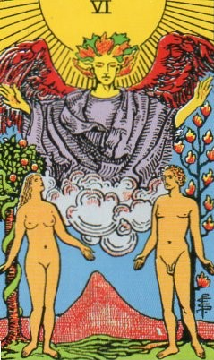
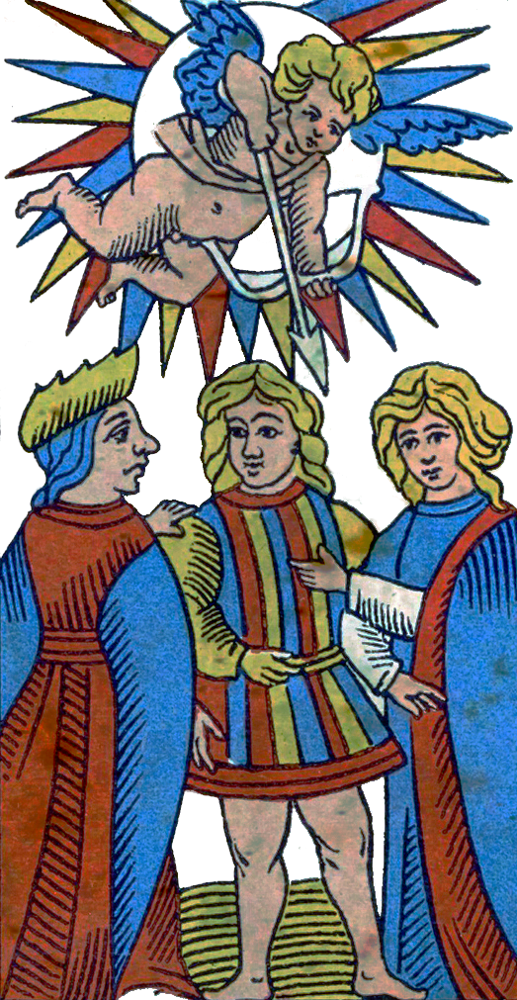
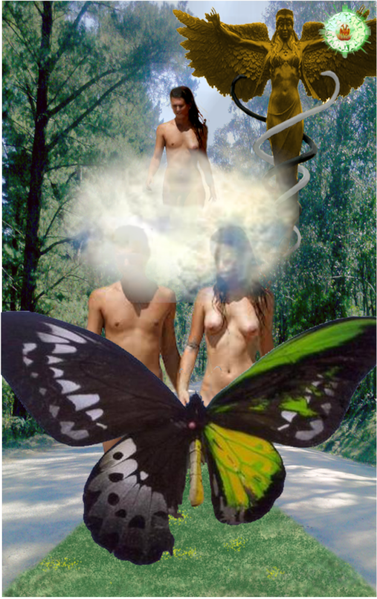
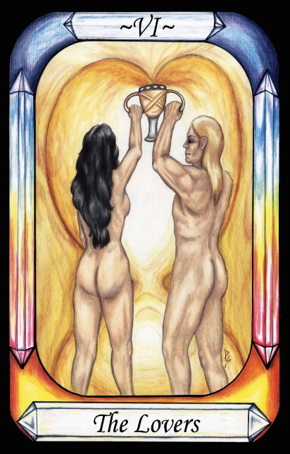
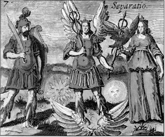
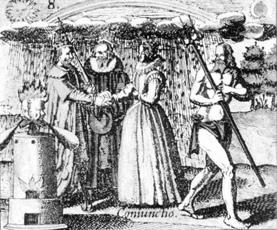
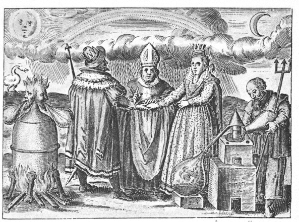

The Lovers




Representation |
Separation of the Hermaphrodite into two sexes |
Meaning |
The continuance of Life. |
Opposite card |
Death, the end of individual life |
Function |
Meaning of Life |
The Lovers card is the separation of the Hermaphrodite soul of man into male and female.
[P27] Man’s divine essence was both Male and Female (Hermaphroditic), like his father, but is a slave to the elements of Nature.
[P29] Nature brought forth seven hermaphroditic men, each corresponding to one of the Governors, who flew in the Air, like Fire and spirit.
[P37] God then loosened the bonds in all living creatures, allowing them to separate into male and female. [The Lovers]
RWS Imagery
Two people – male and female - are presided over by an Angel. The woman looks toward the Angel. The man looks toward the woman. Behind the woman is a fruit tree with a serpent coiled around it. Behind the man is a tree with flame-coloured leaves or flowers. Behind them, centrally positioned, is a single mountain peak. The Sun shines down upon all.
The Lovers card represents the separation of the hermaphroditic seven people into Male and Female, who then bred and multiplied.
Interpretation of RWS Imagery
The Waite deck seems to refer to the Garden of Eden story, in which Eve is taken from Adams side. Commonly, this is taken to mean she was made from his rib, because men have one less pair of ribs than women, but it could also be considered to be a complete split of one into two. The Bible refers to separating Eve from Adams side.
An Angel of God supervises the division, although this may be a Christianisation. In alchemical texts, it is Hermes who separates Male and Female, Adam and Eve.
In the foreground are man and woman as we know them, after the separation.
Discussion
Alchemical literature is filled with references to separation and joining (conjunction), as shown by the following sample of images and text:
Hermes unites the couple, but his dual nature is revealed by his forked beard and echoed in the Janus-faced head above the furnace. He smiles on the Lovers, but knows that their union will precipitate their Death.
On a side note, the Norse goddess Idun’s name sounds similar to Eden, and she is the goddess of apples and rejuvenation.

Figure 6 - Alchemical image of Separatio (Separation into male and female, Hermes)
Engraving 7 from, J.D. Mylius Philosophia reformata, Frankfurt, 1622.

Figure 7 - Alchemical image of Conjunctio Engraving 8
from, J.D. Mylius Philosophia reformata, Frankfurt, 1622
.

Figure 8 - Marriage
The Sixth key of Basil Valentine
The simple interpretation of the Lovers card would be that we were once whole (and seven of us), but were split into two opposite genders, male and female. Thus, we are drawn to the opposite sex in a need to find that wholeness again. Alchemists take the view that genders cannot recombine again until they are purified. Perhaps two pure completed Fools, one male and one female, could reunite, but in a non-sexual way, but it seems that we are unlikely to achieve the required level of purity in the mortal world.
This mythology of soul division was mentioned in one of Plato’s plays, and is generally interpreted to mean that each we are each born with part of a soul, and seek to find the other half. Hence the term “soul-mates”. This lends support to the theory that the Pymander was Neo-platonic in origin, rather than Gnostic.
The Pymander claims that there were seven Hermaphrodites that were split, clearly a reference to the seven Governors, and through them to the 12 signs of the zodiac as shown in Figure 1 - Correspondence of Governors to Zodiac, and thence perhaps to the twelve tribes of the Jews. Perhaps to find our perfect partner, we need someone who Polar Opposites us in each of six planetary influences, while supplementing us in a seventh. The sum of all these would be zero for six, and unity for one of them. The marriage would clearly display the properties for that one Governor. An example might be Bonnie and Clyde, who displayed the Governorship of Mars in their violence.